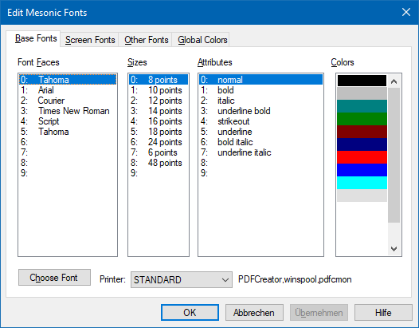
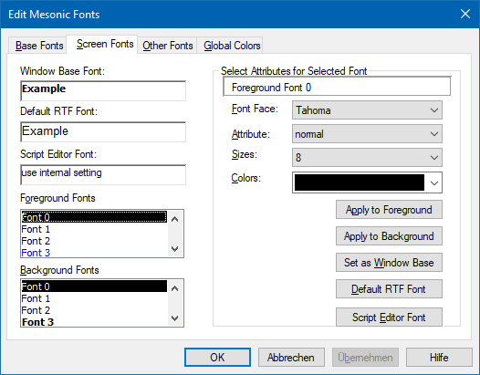
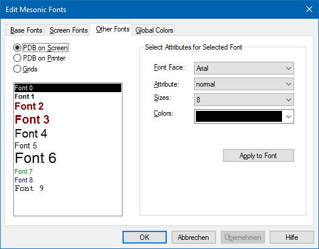
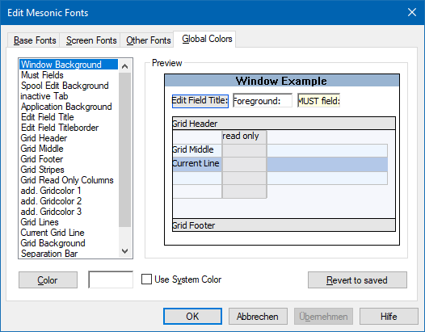

Die Installation des Formular Editors geschieht während der Installation der WinLine. Anschließend befindet sich die Datei "CWLPDFE.EXE" im Programmverzeichnis.
Alle wichtigen Einstellungen für den Formular Editor werden in der Registry gespeichert und sollten nicht verändert werden.
Begriffserklärungen
Ø Formular
Alle Formulare werden am SQL-Server (Systemdatenbank) verwaltet, wobei hier die grundsätzlichen Informationen zum Formular (Name des Formulars, Seitenlänge etc.) stehen. Der interne Aufbau der Formulare wird über die folgenden Dateien verwaltet:
ü MESOREPOX.MESO (X steht für die
Sprache; 0 - Deutsch / 1 - Englisch / etc.)
In dieser Datei ist der Aufbau
der WinLine Original-Formulare definiert.
ü MESOFORMX.MESO (X steht für die
Sprache; 0 - Deutsch / 1 - Englisch / etc.)
In dieser Datei werden die
geänderten Formulare verwaltet.
ü LOCALFORM.DAT
In dieser Datei
werden geänderte Formulare verwaltet, welche nur lokal (von einem Benutzer)
verwendet werden sollen.
Ø PDI
PDIs (Print Description Information) enthalten Informationen über die in den Formularen verwendeten und zur Verfügung stehenden Variablen und Flags. Voraussetzung für das Bearbeiten von Formularen ist das Vorhandensein von PDIs. Ist kein PDI vorhanden, bedeutet das, dass das Formular nicht zur Bearbeitung freigegeben ist. Dies tritt nur in wenigen Spezialfällen auf. Die PDIs werden in den Systemdateien verwaltet und können nicht bearbeitet werden.
Ø MESOCOL.INI
Die Datei MESOCOL.INI enthält die Informationen über verfügbare Schriftarten, -größen, -attribute und Farben.
Diese Einstellungen können mit dem Programm WinLine Customizing Toolkit jederzeit verändert werden. Nach Aufruf des Programms können diese Änderungen über den Menüpunkt
1 File
1 Edit Mesonic Fonts
vorgenommen werden.
Grundsätzlich gibt es 4 Einstellungsmöglichkeiten:
ü Allgemeine Einstellungen - Base
Fonts

ü Bildschirmschriftarten - Screen
Fonts

ü Formularschriftarten - PDB
Fonts

ü Farben - Global Colors

Ø PDF - Print Desciption File
Normalerweise wird das Formular in einer Datenbank gespeichert. Für verschiedene Zwecke (Sicherung, Transfer) muss das Formular zwischengespeichert werden. Dies erfolgt in einer Datei mit der Erweiterung PDF. In dieser Datei ist das komplette Formular in ASCII-Format abgespeichert. Diese Datei ist quasi eine Schnittstelle für den Formulareditor - ein Formular kann sowohl als PDF-Datei ausgegeben als auch von einer PDF-Datei eingelesen werden.